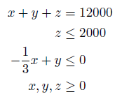

Linear Program (LP)
Introduction
A linear program has the following form:
Where f is a n x 1 vector containing the linear objective function, which is subject to the following constraints:
Linear Inequalities*
A is a m x n
sparse matrix, b is a m x 1 vector
Linear Equalities*
Aeq is a k x n sparse matrix, beq
is a k x 1 vector
Decision Variable Bounds
lb and ub are n x 1 vectors,
where -inf or inf indicate an unbounded lower or upper bound, respectively
The goal is to minimize the objective function by selecting a value of x that also satisfies all constraints.
*Your problem description will either use Linear Inequalties and Linear Equalities OR Linear Row Constraints. See the constraint information page.
Example Problem[2]
You have $12000 to invest and three different funds from which to choose. The municipal bond fund has a 7% return, the local bank CDs have an 8% return, and the high risk account has an expected 12% return. To minimize risk you decide to not invest any more than $2000 in the high risk account. Also, for tax reasons you need to invest at least three times as much in the municipal bonds as in the bank CDs. Assuming year end returns are as expected, what are the optimal investment amounts?
Write the equations assuming x = municipal bond investment, y = local bank CDs investment and z = high risk investment
The objective function is to maximize the return, thus we negate our objective:
Next write the equations for the constraints:

The objective and constraints can now be written in standard form:
This can be solved using the OPTI Toolbox as follows:
% Objective
f = -[0.07;0.08;0.12];
% Constraints
A = [-1/3 1 0; 0 0 1];
b = [0; 2000];
Aeq = [1 1 1];
beq = 12000;
lb = [0;0;0];
% Build OPTI Problem
Opt = opti('f',f,'ineq',A,b,'eq',Aeq,beq,'lb',lb)
% Solve
x = solve(Opt)
And the solution is:
x =
7500
2500
2000
Note this problem can also be solved as a system with only two variables, see the original reference for details.
Considerations
Normally a large scale LP will consist of hundreds of decision variables (x) and thousands of constraints contained within the typically sparse A and Aeq.
Copyright © 2011-2013 Jonathan Currie (I2C2)